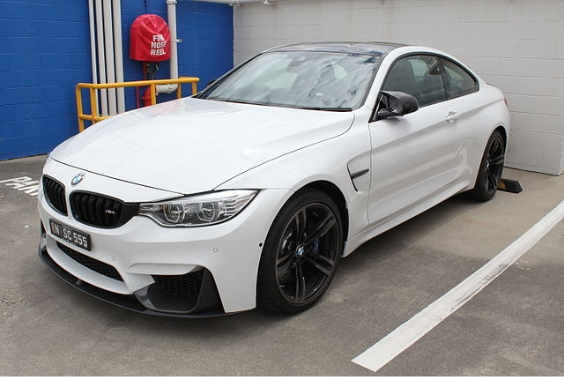
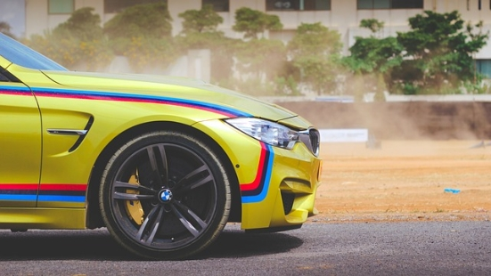
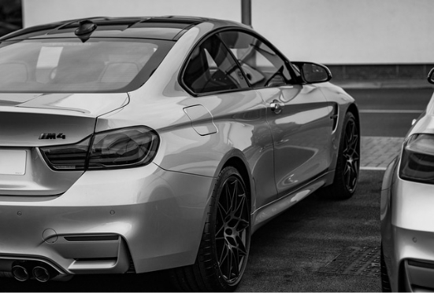

M4 - F82 Coupe, F83 Cabriolet (2013 to present)
Carbon fiber reinforced plastic is used extensively throughout the car, including drive shaft, roof, roof bow, trunk, and front strut brace.
For the first time in the M vehicle, an electric power steering unit is being used. The steering system is specifically tuned for the M3 and M4. The 18 inches (460 mm) and 19 inches (480 mm) wheel options are available with lightweight forged alloys being standard.
The M compound brakes come standard (in blue), while carbon ceramic brakes (in gold) are available as an option.



The M4 features Active Sound. A live amplification of the engine's natural sound was inducted into the passenger cabin via the speakers.
BMW says this technology has been used so that the well insulated cabin can reduce road/wind noise but still provide the driver with the sporty sound of the M powered engine. There are no artificial sound or any pre-recorded track.
The engine uses two mono-scroll turbochargers with boost peaking at 18.1 psi (1 bar). The power is rated at 425 hp (317 kW; 431 PS) while torque will be 550 N⋅m (410 lb⋅ft).